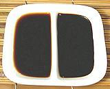

Magnolias


SAFARI
Users
Besan / Chickpea Flour
[Cicer arietinum]
This flour is very popular in India, but now used worldwide. It is
particularly used for making or coating fritters of all kinds. It can
be found in just about any muti-ethnic market and some supermarkets.
Like whole wheat flour, Besan is prone to going rancid. It should be
purchased from a source with high turnover, kept in a tightly sealed
container, and replaced every 6 months or so.
Fava Bean Products
[Vicia faba alt V. Faba sativa]
In Sichuan and Hunan provinces of southern China, fava beans rather
than soy beans are used to make fermented bean pastes. These may be
plain (as in the photo) or mixed with chili. They are important
ingredients in sauces. Ingred: bean, salt.
Details and Cooking.
Mung Bean Products
[Moong (India); Vigna radiata] Mung beans apparently originated in Mongolia, but by 4500 years ago they were widely cultivated in India. From there they spread to China and Southeast Asia.
Mung Bean Sprouts[Tao Nge (Thai); Tua Ngok (Laos); Sukjunamul (Korea)]
These are the regular bean sprouts found in just about every grocery
market in North America. They are sprouted Chinese style - in India
sprouts are cooked at a much earlier stage, when they have a tail
about 1/2 inch long and the leaves are just emerging. A far wider
range of beans are sprouted in India than just mung beans.
Details and Cooking.
Bean Starch Noodles[Cellophane Noodles, Glass Noodles; fensi, tung hoon, mien, bun tau, bun tao (China)]
Most familiar are the bean threads shown in the photo, but much wider
noodles are also made from mung bean starch. They are much used in
salads because they need only be soaked in cold water to be edible,
but they are also used in soups, and, with care, stir fries. In Korea,
mung bean starch is also made into thin sheets.
Mung Bean Jelly[nokdumuk, cheongpomuk (Korea); liangfen (China)]
This jelly product is much used in Korea, along with similar products
made from acorn and yam starch. This jelly is also made into noodles.
It is commonly eaten cold with a sauce, but also in stews and
soups. In southern China, it may be made from chick peas rather than
mung beans.
|
Soybean Products
[Bhatt (India); Soya Bean (UK); Glycine max] Soybeans are probably native to China, and have been important to agriculture there since the earliest times - but not as a food crop. The beans were planted as a fallow field rotation crop to fix nitrogen and restore fertility to the fields, then plowed under. Soybeans were not eaten except in times of famine, because they have a wide range of toxins and disruptive hormone analogs.
During the Chou Dynasty (1132-246 BCE) techniques were developed to create soy sauce, miso and other soy products detoxified by fermentation. A little later a method was developed to make a soybean cheese from finely ground soybeans by precipitating solids with a salt - the product we know as tofu.
MisoFermented soybean paste was invented in China during the Chou Dynasty (1132-246 BCE) and was the first really successful method to render soybeans edible - and it also produced a very usable byproduct - tamari soy sauce. Both these products are too strong in flavor to be used alone, but they have both become indispensable flavoring ingredients - though most soy sauce is now made by a different process. Details and Cooking. Soy Sauce [Shoyu (Japan), Soya Sauce (UK)] First made about 2500 years ago in China, this fermented soybean condiment has long been essential to the cuisines of East and Southeast Asia, and is now used worldwide in almost all cuisines. For most cooks there are just two significant types, Light
(Japanese or Chinese) and Dark (Chinese). Also, for celiacs,
some Tamari type sauces are made with no wheat, thus gluten free.
Additionally, you should know the difference between Naturally Brewed
(generally considered safe) and Artificial (rather questionable) soy
sauces.
Details and Cooking.
Tofu[Tofu (Japan, US); Dofu, Doufou (China); Tao Gua, Thua Ngok (Thai); Tauge (Chinese Hokkien); Tau Nge (Thai Hokkien); Tubu (Korea); Bean Crud, Toad Food (improper)] Basically, bean curd is cottage cheese made by coagulating ground up and cooked soybeans (soy milk) rather than dairy milk. First appearing during the Chou Dynasty (1132-246 BCE), there are several theories for its origin, all of which are unadulterated speculation. In this case, most, but not all, the toxins are drained away with
the liquid. Two studies have linked high tofu consumption with low
brain weight and cognitive decline. Others say this may be not from
the beans, but due to aluminum from processing equipment - but that's
scant comfort for someone who eats a lot of tofu. Many products, both
Asian and Western, are made from tofu, and many of the important ones
will be found on our
Tofu / Bean Curd page.
Soybean Sprouts[Kongnamul (Korea)]
Soy bean sprouts are larger and sturdier than mung bean sprouts.
They are much favored by Koreans - the Korean groceries here in
Los Angeles stock a lot more soy sprouts than regular mung bean
sprouts. They have a stronger flavor and can withstand longer cooking.
Details and Cooking.
Fermented Bean Paste[Zhu Jiang (China)]
These fermented pastes are very important in Chinese cuisine,
particularly in the making of sauces. They are made by many
manufacturers and in endless varieties, with and without chilis.
Some contain red rice mold and other flavoring and coloring
ingredients. The photo specimen, from China, is fairly standard.
Ingred: soya bean, water, salt, wine, wheat flour, red rice starter.
Doenjang Soybean Paste
This fermented soybean paste, similar to Japanese Miso, is an
essential ingredient in Korean cuisine, appearing in soups, stews,
sauces, dips and dressings. The photo specimen was purchased in a 1.1
pound tub from a Korean market in Los Angeles. Ingredients: water
soybean, wheat flour, salt, fermented soybean powder, rice wine,
wheat, soybean powder, malt, disodium inosinate, disodium guanylate.
Details and Cooking.
Yellow Bean Sauce[Nuoc Tuong (Viet)]
Sometimes called "Brown Bean Sauce or "Soy Bean Paste", this sauce is
made from fermented yellow soy beans. It is a very common ingredient
in Thai and Vietnamese cuisine and available in markets serving
Southeast Asian communities. The brown one to the left is a reasonable
substitute for fish sauce in many vegetarian dishes.
Details and Cooking.
Fermented Black Beans
Wherever a Chinese recipe calls for "Black Beans", this is what is
meant. An important sauce ingredient used throughout China and parts of
Southeast Asia, they are available in just about any market serving an
Asian community. Black soy beans are fermented with salt and ginger,
and sometimes other spices, then dried and packaged. The traditional
cardboard cylinder package can still be had, but they are now commonly
vacuum packed in poly bags.
Details and Cooking.
Natto[Cheonggukjang (Korea)]
Most known from Japan, this product is made by fermenting steamed
soybeans with a starter culture of Bacillus subtilis natto.
It has a fairly strong odor and taste, though the perception of
individuals vary. In Japan it is often eaten for breakfast with rice.
It is usually sold packaged as a stack of small single serving trays,
and may be frozen. Natto is considered a very healthy product both
in Japan and by health advocates in North America. Similar fermented
products, made with the same bacteria culture, are made in China,
Korea, Thailand, the Himalayan region, parts of India, and parts of
West Africa.
Details and Cooking.
Tempeh
A specialty of Indonesia, this product is made by fermenting cooked
soybeans with a Rhizopus mold. It is favored by some vegetarians
as a meat substitute in all kinds of recipes. In my opinion it doesn't
resemble meat in texture, taste or in any other way. In the late
1970s it was the "great white hope" of vegans as a non-animal source
of vitamin B12. That didn't work out - the B12 came from insect
(animal) contamination and vanished under North American sanitary
processing conditions.
Details and Cooking.
Textured Vegetable Protein / TVPThis product is made from what is left after hexane extraction of soy oil from soy flour. It is heated and extruded through dies into various shapes, most commonly flake. The extrusion process gives the product a fibrous meat-like texture. It is widely used as a meat analog for vegetarian products and to extend and improve ground meat (it absorbs and retains juices that would otherwise be lost in cooking). Residual hexane content is considered too slight to result in any
health risk, but other risks associated with unfermented soy, including
hormone interference, are a matter of considerable controversy. TVP is
very high in protein and low in carbohydrates. The protein is nearly
complete, so TVP is heavily used by vegans, both for nutrition and
texture.
Soybean OilSoybean oil is a very light colored neutral tasting oil with a high smoke point. It is very high in polyunsaturated fats, thus quickly develops rancidity if used at frying temperatures. Nearly all is made from genetically modified beans. It is extracted with hexane and subjected to extensive high temperature processing, deodorizing and refining. While it starts out fairly high in vegetable Omega-3 fats, these are very temperature fragile, so I expect little survives processing. Soy oil, formerly used mostly in the paint industry, is now strongly
promoted as "healthy" by the industry - and just as strongly questioned
by others. Because the industry can buy as many regulators, politicians
and scientists (yes, scientists can be bought as easily as politicians)
as they need to promote the product, I tend to give more weight to
arguments from the other side. For details of the controversy See
our Soybeans and Health page.
Soy MilkSoy milk is made by water extraction of ground cooked soybeans and filtering. It is strongly promoted as a "health food", but Its risks and benefits are highly controversial, particularly for feeding to infants. It contains many complex chemical components, some of which mimic human hormones and may affect sexual development. This is of particular interest to some vegans who do not breast feed their infants because that would be feeding them an animal product. Once again, the controversy involves large amounts of money, so it is nearly impossible to know the truth. For details of the controversy See our Soybeans and Health page. Soy milk is high in protein and contains no cholesterol, but it is
low in available calcium. A lot of work has been done to remove beany
tastes and otherwise make it more acceptable compared to the real
thing, so different manufacturers use somewhat different processes.
|
Tamarind
 [Indian Date; Tamarindo (Spanish); Asam (Malay), Asem Jawa (Indonesia);
Imli, Amli, Chinch (India); Ma-kahm (Thai); Me (Vietnam); Puli
(tamil, malay); Tamarindus indica]
[Indian Date; Tamarindo (Spanish); Asam (Malay), Asem Jawa (Indonesia);
Imli, Amli, Chinch (India); Ma-kahm (Thai); Me (Vietnam); Puli
(tamil, malay); Tamarindus indica]
Native to tropical Africa and Madagascar, the tamarind tree was known
to the ancient Egyptians, and taken to India so long ago even botanists
thought it was native there. From India it was introduced to Persia and the
Arab world, thus Arabic "tamar hindi" (Indian date). It is now planted
throughout the tropics and sub-tropics including Mexico, Central America,
the Caribbean and southern Florida.
Details and Cooking.